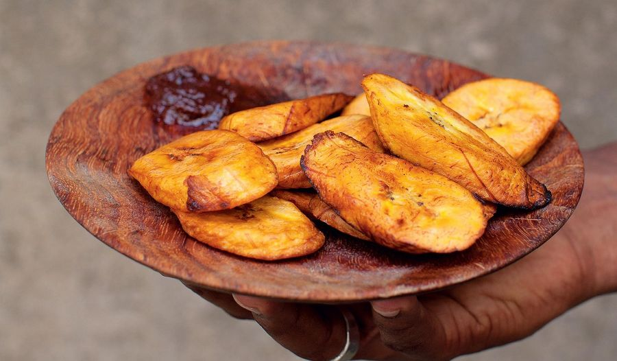

Efo Riro

Local Nigerian food
Dodo is a popular food that originated from the western part of Nigeria.
It is typical to the Yoruba culture. Very sweet and tasty
Ingredients
Steps
- Dice the plantain into cubes or fingers
- Sprinkle a pinch of salt in it and few drops of water to dissolve the salt
- Fry it in the hot oil till it turns brown
- Serve hot and yummy